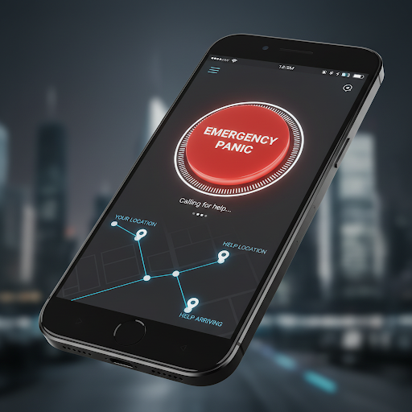

Ronald Figueroa
Senior Business AnalystTransforming Complex Data into Strategic Business Impact
Results-driven Senior Business Analyst with over 10 years of experience translating complex data into actionable business insights. Expert in synthesizing large-scale datasets to drive strategic decision-making and delivering digital transformation roadmaps for national-scale institutions.

Budget Administration
Process Time Reduction
Data Records Handled
Delivery Success Rate
Strategic Case Studies & MIT Capstones

Electoral Registry Analytics
Automated real-time reporting framework eliminating manual data requests across national branches.
Integrated Justice Framework
Breaking critical data silos across institutions to provide a unified view of legal workflows.

Biometric Verification Kiosks
Deployed 24/7 automated biometric kiosks reducing identity fraud and streamlining attendance.
Judicial Notification Portal
Pioneered a digital notification platform, achieving a 95% reduction in service delivery times.

Institutional Panic Button
Integrated emergency alert system for high-security environments with real-time location tracking.
Core Competencies
SQL & Python
Data Storytelling
Power BI & Tableau
Process Automation
ROI & Financial Modeling
Predictive Analytics
Stakeholder Alignment
Digital Transformation
Let's Discuss Your Next Data Strategy
"Bridging the gap between technical infrastructure and executive clarity."
refigueroah@gmail.com
Location
Milton, Ontario, Canada